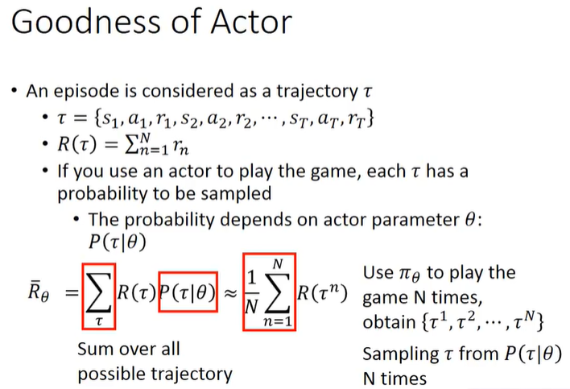

1. Reinforcement Learning¶
-
Actor(Policy)
Neural Network as Actor (Deep). vs lookup Table(Q Learning).
使用神经网络作为Actor比查表的优势？
查表无法穷举输入，e.g.图像画面或者语言输入。NN泛化性比较强，对于未看过的Observation，举一反三，合理的输出。
-
Environment
-
Reward
2. Deep Learning¶
-
如何选取Actor？ Neural Network as Actor (Deep)
-
如何衡量Actor的好坏？
Maxmize Reward的期望。Reward是一个回合episode，每轮Reward的总和。由于Actor是stochastic随机的，每个回合的Reward不同。所以maxmize sampling N回合Reward的期望。
期望就衡量了Actor
